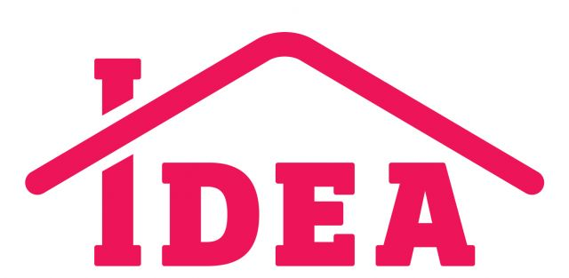

MITEX 2026 · Россия · Стенд 7С1206
М-ПЛАСТИКА, ООО
Карточка проверена 10 ноября 2026, 09:25 · Источник ↗ · Снимок оригинальной карточки ↗
О компании
Компания «М-пластика» предлагает оптовые закупки хозяйственных товаров различного назначения, изготовленных из высококачественного пластика. С нашей помощью ваша жизнь станет проще. Наши товары незаменимы в повседневной жизни и органично вписываются в привычное пространство ванной, кухни, детской, мастерской. Простые, как все гениальное, решения для хранения и уборки от «М-пластика» позволят значительно сэкономить не только время, но и средства.
Контакты
Все контактные сведения из карточки
Контакты Производство Телефон: +7 (495) 645-28-00 E-mail: info@m-plastika.ru Адрес: 142411, Россия, Московская область, г. Ногинск, д. Молзино, ул. Советская, д.85 Продажи Телефон: +7 (495) 135-80-95 E-mail: info@m-plastika.ru Адрес: 140091, Россия, г. Дзержинский, ул. Энергетиков, д. 22, корп. 3 Веб-сайт: https://mplastika.ru/ E-mail: info@m-plastika.ru Телефон: +74951358095
Все рубрики участника
Зал
- Зал № 7
Участник выставки
- MITEX
Фотографии и изображения


Видео, каталоги и документы
В доступной карточке нет видео или документов. Смотрите сайт участника.
Каталог продукции участника
Материалы каталога
Органайзеры Лотки для метизов Полки для инструментов Пластиковые ящики для инструментов
Материалы каталога
Органайзеры Органайзер для инструментов Органайзер для инструментов 2-х сторонний 270х220х70мм Блок для мелочей 144х165х36мм Органайзер КВИК для хранения инструментов большой (29×15,5×8,5 ) см Органайзер КВИК для хранения инструментов малый (23,5×13×8,5 ) см Блок для мелочей 114х142х34мм
Органайзер для инструментов
Органайзер для инструментов
Органайзер для инструментов 2-х сторонний 270х220х70мм
Органайзер для инструментов 2-х сторонний 270х220х70мм
Блок для мелочей 144х165х36мм
Блок для мелочей 144х165х36мм Небольшой блок для хранения вещей позволит разместить небольшие мелочи в ячейках Пластиковый контейнер выполнен из качественного материала и имеет герметичную крышку, которая предотвращает высыпание содержимого блока
Органайзер КВИК для хранения инструментов большой (29×15,5×8,5 ) см
Органайзер КВИК для хранения инструментов большой (29×15,5×8,5 ) см Мобильное и безопасное хранение, систематизация и транспортировка инструмента. Продуманное пространство позволяет удобно разложить инструменты и метизы для быстрого поиска. Эргономичная ручка обеспечивает комфортный перенос. Надёжный замок предотвращает высыпание содержимого и обеспечивает сохранность инструментов в дороге. Идеально для: мастеров–любителей, автомехаников, строителей и всех, кто хочет содержать свой инструмент в порядке.
Органайзер КВИК для хранения инструментов малый (23,5×13×8,5 ) см
Органайзер КВИК для хранения инструментов малый (23,5×13×8,5 ) см Мобильное и безопасное хранение, систематизация и транспортировка инструмента. Продуманное пространство позволяет удобно разложить инструменты и метизы для быстрого поиска. Эргономичная ручка обеспечивает комфортный перенос. Надёжный замок предотвращает высыпание содержимого и обеспечивает сохранность инструментов в дороге. Идеально для: мастеров–любителей, автомехаников, строителей и всех, кто хочет содержать свой инструмент в порядке.
Блок для мелочей 114х142х34мм
Блок для мелочей 114х142х34мм Небольшой блок для хранения вещей позволит разместить небольшие мелочи в ячейках Пластиковый контейнер выполнен из качественного материала и имеет герметичную крышку, которая предотвращает высыпание содержимого блока
Материалы каталога
Лотки для метизов Лоток для метизов 150х100х70мм Лоток для метизов 230х160х120мм Лоток для метизов 200х120х90мм Органайзер настенный с лотками Набор лотков ЮНИТ для метизов с крепежом (2 планки + 6 лотков малые) Набор лотков ЮНИТ для метизов с крепежом (3 планки + 9 лотков малые) Набор лотков ЮНИТ для метизов с крепежом (2 планки + 6 лотков средние) Набор лотков ЮНИТ для метизов с крепежом (3 планки + 9 лотков средние)
Лоток для метизов 150х100х70мм
Лоток для метизов 150х100х70мм
Лоток для метизов 230х160х120мм
Лоток для метизов 230х160х120мм
Лоток для метизов 200х120х90мм
Лоток для метизов 200х120х90мм
Органайзер настенный с лотками
Органайзер настенный с лотками Готовый набор лотков с крепежом! Комплектация: Лоток для метизов: 100 × 150 × 70 мм – 9 шт. Настенная панель: 372 × 375 × 20 мм – 2 шт. Держатель: 28 × 244 × 56 мм – 2 шт. Крючок: 18 × 36 × 52 мм – 10 шт. Лотки для сортировки метизов позволяют организовать порядок в мастерской или на складе: различные метизы, детали и заготовки удобно рассортировать в такие ящики Лотки можно крепить к стене: настенные панели соединить между собой и закрепить с помощью шурупов (подобранных в соответствии с материалом поверхности для надёжного крепления), разместить на панели лотки, крючки и держатель На передней части лотка есть панель для наклеивания ярлыка с описанием, что упрощает поиск нужной детали Надёжно упакован в плотный полиэтилен, края защищены гофрокартоном, с инструкцией изделия
Набор лотков ЮНИТ для метизов с крепежом (2 планки + 6 лотков малые)
Набор лотков ЮНИТ для метизов с крепежом (2 планки + 6 лотков малые) Лотки для сортировки метизов – идеальное решение для организации порядка в мастерской или на складе. В них удобно хранить любой крепёж, детали и заготовки. Крепёжная планка фиксируется к стене саморезами (входят в комплект) Лотки легко навешиваются на планку. На передней части лотка есть панель для подписи, что упрощает поиск нужной детали. Размер лотка: 15,5 × 9,8 × 7 см, объём: 350 мл до нижнего буртика
Набор лотков ЮНИТ для метизов с крепежом (3 планки + 9 лотков малые)
Набор лотков ЮНИТ для метизов с крепежом (3 планки + 9 лотков малые) Лотки для сортировки метизов – идеальное решение для организации порядка в мастерской или на складе. В них удобно хранить любой крепёж, детали и заготовки. Крепёжная планка фиксируется к стене саморезами (входят в комплект) Лотки легко навешиваются на планку. На передней части лотка есть панель для подписи, что упрощает поиск нужной детали. Размер лотка: 15,5 × 9,8 × 7 см, объём: 350 мл до нижнего буртика
Набор лотков ЮНИТ для метизов с крепежом (2 планки + 6 лотков средние)
Набор лотков ЮНИТ для метизов с крепежом (2 планки + 6 лотков средние) Лотки для сортировки метизов – идеальное решение для организации порядка в мастерской или на складе. В них удобно хранить любой крепёж, детали и заготовки. Крепёжная планка фиксируется к стене саморезами (входят в комплект) Лотки легко навешиваются на планку. На передней части лотка есть панель для подписи, что упрощает поиск нужной детали. Размер лотка: 19,5 × 11,8 × 9,1 см, объём: 700 мл до нижнего буртика
Набор лотков ЮНИТ для метизов с крепежом (3 планки + 9 лотков средние)
Набор лотков ЮНИТ для метизов с крепежом (3 планки + 9 лотков средние) Лотки для сортировки метизов – идеальное решение для организации порядка в мастерской или на складе. В них удобно хранить любой крепёж, детали и заготовки. Крепёжная планка фиксируется к стене саморезами (входят в комплект) Лотки легко навешиваются на планку. На передней части лотка есть панель для подписи, что упрощает поиск нужной детали. Размер лотка: 19,5 × 11,8 × 9,1 см, объём: 700 мл до нижнего буртика
Материалы каталога
Полки для инструментов Полка для инструментов
Полка для инструментов
Полка для инструментов Прочная конструкция позволяет разложить многочисленные отвертки, молотки, плоскогубцы, гвоздодер, насадки для отверток, гаечные ключи Имеет большое количество отверстий разного размера, двойных отверстий, небольшую полку для хранения мелких предметов, крючки для подвеса Крепится на стену с помощью саморезов или гвоздей Позволяет разместить необходимые инструменты под рукой, рядом с рабочим местом
Материалы каталога
Пластиковые ящики для инструментов Пластиковые ящики для инструмента – это удобный кейс, в котором можно хранить всё необходимое для ремонта дома или в автомобиле. Также подойдёт для профессиональных мастеров, которые часто выезжают в разные районы города по вызову. Надёжно защищает инструменты от грязи, влаги, царапин и ударов. Удобная ручка позволяют легко переносить ящик, как чемоданчик. Ящик для инструментов АТЛАНТ 18' (с консолью и секциями) Ящик для инструментов УРАН 21' (с двумя консолями и коробками) Ящик для инструментов ТИТАН 13' Ящик для инструментов ТИТАН 16' Ящик для инструментов ТИТАН 18' Ящик для инструментов ТИТАН 21' Ящик для инструментов ТИТАН 16' (с секциями) Ящик для инструментов ТИТАН 18' (с секциями) Ящик для инструментов ТИТАН 21' (с секциями) Ящик для инструментов ТИТАН 18' (с коробками) Ящик для инструментов ТИТАН 21' (с коробками) Ящик для инструментов ТИТАН 13' (с секциями)
Ящик для инструментов АТЛАНТ 18' (с консолью и секциями)
Ящик для инструментов АТЛАНТ 18' (с консолью и секциями) Ящик для инструментов используется для хранения и транспортировки ручного инструмента. В ящике предусмотрен вкладыш для инструментов с внутренними перегородками, вместительное главное отделение позволяет организовать хранение множества инструментов. На крышке расположены 3 практичных органайзера, для хранения мелочей. С лицевой стороны ящика расположена функциональная консоль для сортировки мелочей. При изготовлении используется прочный пластик, обеспечивающий длительный срок эксплуатации.
Ящик для инструментов УРАН 21' (с двумя консолями и коробками)
Ящик для инструментов УРАН 21' (с двумя консолями и коробками) Ящик для инструментов используется для хранения и транспортировки ручного инструмента. В ящике предусмотрен вкладыш для инструментов с внутренними перегородками, вместительное главное отделение позволяет организовать хранение множества инструментов. На крышке расположены 3 практичных органайзера, для хранения мелочей. С лицевой стороны ящика расположены 2 функциональные консоли для сортировки мелочей. При изготовлении используется прочный пластик, обеспечивающий длительный срок эксплуатации
Ящик для инструментов ТИТАН 13'
Ящик для инструментов ТИТАН 13' Ящик для инструментов с вкладышем и замками изготовлен из прочного безопасного пластика. Модель учитывает все нюансы для удобства переноски инструментов, в ящике предусмотрены: вкладыш для инструментов с внутренними перегородками; вместительное главное отделение; защелкивающиеся замки, защищенные от случайного открывания; удобная ручка на крышке ящика, которую при необходимости можно сложить.
Ящик для инструментов ТИТАН 16'
Ящик для инструментов ТИТАН 16' Ящик для инструментов с вкладышем и замками изготовлен из прочного безопасного пластика. Модель учитывает все нюансы для удобства переноски инструментов, в ящике предусмотрены: вкладыш для инструментов с внутренними перегородками; вместительное главное отделение; защелкивающиеся замки, защищенные от случайного открывания; удобная ручка на крышке ящика, которую при необходимости можно сложить.
Ящик для инструментов ТИТАН 18'
Ящик для инструментов ТИТАН 18' Ящик для инструментов с вкладышем и замками изготовлен из прочного безопасного пластика. Модель учитывает все нюансы для удобства переноски инструментов, в ящике предусмотрены: вкладыш для инструментов с внутренними перегородками; вместительное главное отделение; защелкивающиеся замки, защищенные от случайного открывания; удобная ручка на крышке ящика, которую при необходимости можно сложить.
Ящик для инструментов ТИТАН 21'
Ящик для инструментов ТИТАН 21' Ящик для инструментов с вкладышем и замками изготовлен из прочного безопасного пластика. Модель учитывает все нюансы для удобства переноски инструментов, в ящике предусмотрены: вкладыш для инструментов с внутренними перегородками; вместительное главное отделение; защелкивающиеся замки, защищенные от случайного открывания; удобная ручка на крышке ящика, которую при необходимости можно сложить.
Ящик для инструментов ТИТАН 16' (с секциями)
Ящик для инструментов ТИТАН 16' (с секциями) Ящик для инструментов с вкладышем и замками изготовлен из прочного безопасного пластика. Модель учитывает все нюансы для удобства переноски инструментов, в ящике предусмотрены: вкладыш для инструментов с внутренними перегородками; вместительное главное отделение; органайзеры на крышке и консоли для сортировки мелочей; защелкивающиеся замки, защищенные от случайного открывания; удобная ручка на крышке ящика, которую при необходимости можно сложить.
Ящик для инструментов ТИТАН 18' (с секциями)
Ящик для инструментов ТИТАН 18' (с секциями) Ящик для инструментов с вкладышем и замками изготовлен из прочного безопасного пластика. Модель учитывает все нюансы для удобства переноски инструментов, в ящике предусмотрены: вкладыш для инструментов с внутренними перегородками; вместительное главное отделение; органайзеры на крышке и консоли для сортировки мелочей; защелкивающиеся замки, защищенные от случайного открывания; удобная ручка на крышке ящика, которую при необходимости можно сложить.
Ящик для инструментов ТИТАН 21' (с секциями)
Ящик для инструментов ТИТАН 21' (с секциями) Ящик для инструментов с вкладышем и замками изготовлен из прочного безопасного пластика. Модель учитывает все нюансы для удобства переноски инструментов, в ящике предусмотрены: вкладыш для инструментов с внутренними перегородками; вместительное главное отделение; органайзеры на крышке и консоли для сортировки мелочей; защелкивающиеся замки, защищенные от случайного открывания; удобная ручка на крышке ящика, которую при необходимости можно сложить.
Ящик для инструментов ТИТАН 18' (с коробками)
Ящик для инструментов ТИТАН 18' (с коробками) Ящик для инструментов с вкладышем и замками изготовлен из прочного безопасного пластика. Модель учитывает все нюансы для удобства переноски инструментов, в ящике предусмотрены: вкладыш для инструментов с внутренними перегородками; вместительное главное отделение; органайзеры на крышке оснащены внутренними перегородками; защелкивающиеся замки, защищенные от случайного открывания; удобная ручка на крышке ящика, которую при необходимости можно сложить.
Ящик для инструментов ТИТАН 21' (с коробками)
Ящик для инструментов ТИТАН 21' (с коробками) Ящик для инструментов с вкладышем и замками изготовлен из прочного безопасного пластика. Модель учитывает все нюансы для удобства переноски инструментов, в ящике предусмотрены: вкладыш для инструментов с внутренними перегородками; вместительное главное отделение; органайзеры на крышке оснащены внутренними перегородками; защелкивающиеся замки, защищенные от случайного открывания; удобная ручка на крышке ящика, которую при необходимости можно сложить.
Ящик для инструментов ТИТАН 13' (с секциями)
Ящик для инструментов ТИТАН 13' (с секциями) Ящик для инструментов с вкладышем и замками изготовлен из прочного безопасного пластика. Модель учитывает все нюансы для удобства переноски инструментов, в ящике предусмотрены: вкладыш для инструментов с внутренними перегородками; вместительное главное отделение; органайзеры на крышке и консоли для сортировки мелочей; защелкивающиеся замки, защищенные от случайного открывания; удобная ручка на крышке ящика, которую при необходимости можно сложить.
Новости из карточки
Новость участника
08.09.2026 14:55